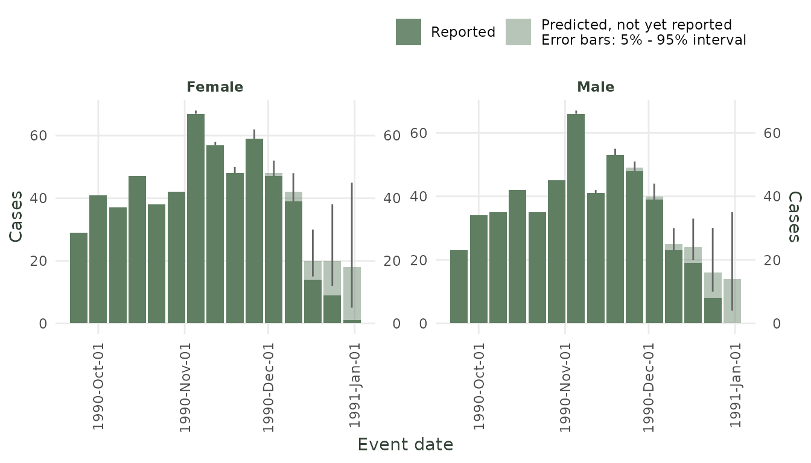
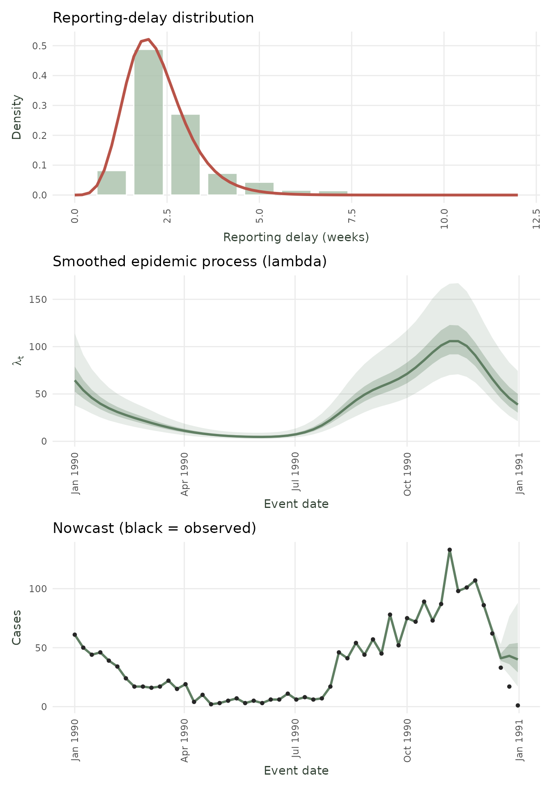
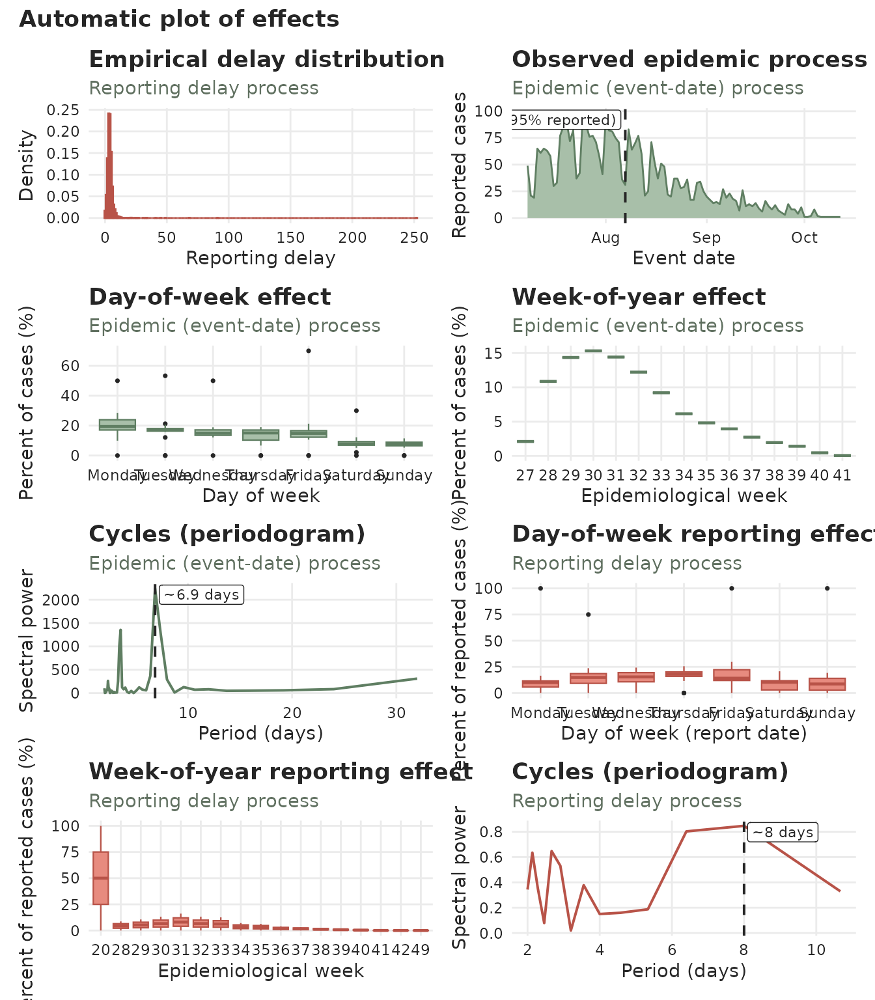
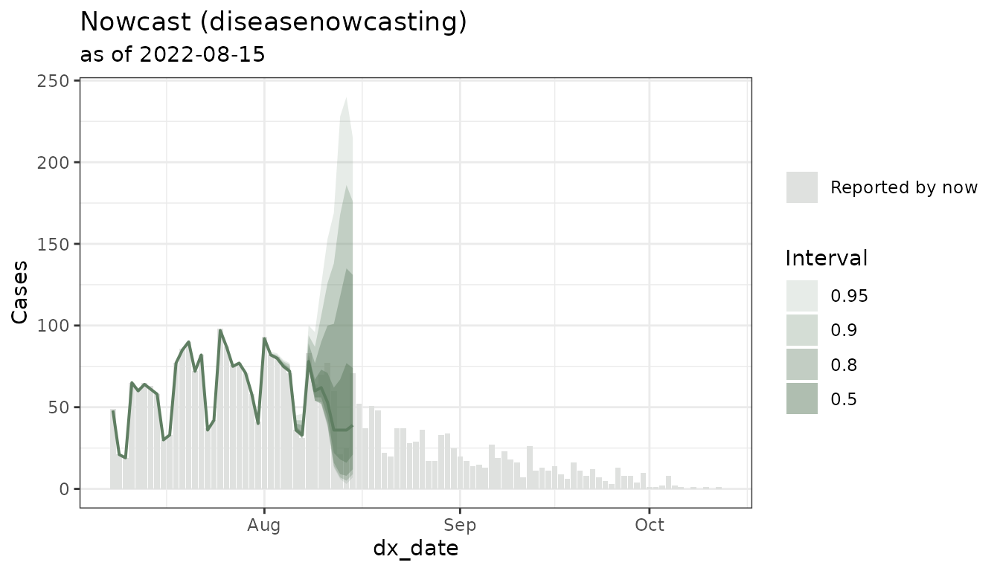

Introduction to diseasenowcasting: Real-Time Epidemic Nowcasting
Rodrigo Zepeda-Tello
Source:vignettes/introduction.Rmd
introduction.Rmddiseasenowcasting is an R package for nowcasting time
series of epidemiological cases. Epidemiologic surveillance tools
usually have an intrinsic delay between the true date of an
event (event_date) and the report date for
that event (report_date). Some examples include
the true date being symptom onset or testing time and the report date
corresponds to when the case was registered in the system.
diseasenowcasting uses censored Bayesian models (via R’s
Template Model Builder RTMB)
to infer the cases that have not yet been reported thus providing a
prediction of the final number of casees.
Your data: the tbl_now format
diseasenowcasting works with data organised as a
tbl_now object from the companion tbl.now
package. A tbl_now is simply a data frame that has been
annotated with the roles of its columns:
event date when the event happened (e.g. symptom onset)
report date when the event was reported (e.g. date entered into the database)
strata (optional) columns that defined all the strata (e.g. sex and region)
now (optional) the date until which to nowcast (assumes all events and reports before the now have been observed and missing observations correspond to no observations - i.e. if one day there were not cases the missingness can be translated into zero cases)
As a quick example, here is how to build a tbl_now using
the following surveillance data for dengue in Puerto Rico:
data(denguedat)#> onset_week report_week gender
#> 1 1990-01-01 1990-01-01 Male
#> 2 1990-01-01 1990-01-01 Female
#> 3 1990-01-01 1990-01-01 Female
#> 4 1990-01-01 1990-01-08 Female
#> 5 1990-01-01 1990-01-08 Male
#> 6 1990-01-01 1990-01-15 FemaleWe can transform the data.frame to a
tbl_now by specifying the event and report dates
(onset and report weeks respectively) as well
as the data_type and the strata (in this case,
gender).
dengue_tbl <- tbl_now(
denguedat,
event_date = onset_week, # symptom onset date
report_date = report_week, # when the record was reported
strata = gender, # remove if no strata or add as vector all strata (e.g. strata = c(gender, age, region))
data_type = "linelist", # another option is "count-incidence" if data is aggregated
now = as.Date("1991-01-01")
)
dengue_tbl
#> # A tibble: 52,987 × 6
#> # Data type: "linelist"
#> # Frequency: Event: `weeks` | Report: `weeks`
#> onset_week report_week gender .event_num .report_num .delay
#> <date> <date> <chr> <dbl> <dbl> <dbl>
#> [event_date] [report_date] [strata] [...] [...] [...]
#> 1 1990-01-01 1990-01-01 Male 0 0 0
#> 2 1990-01-01 1990-01-01 Female 0 0 0
#> 3 1990-01-01 1990-01-01 Female 0 0 0
#> 4 1990-01-01 1990-01-08 Female 0 1 1
#> 5 1990-01-01 1990-01-08 Male 0 1 1
#> 6 1990-01-01 1990-01-15 Female 0 2 2
#> 7 1990-01-01 1990-01-15 Female 0 2 2
#> 8 1990-01-01 1990-01-15 Female 0 2 2
#> 9 1990-01-01 1990-01-22 Female 0 3 3
#> 10 1990-01-01 1990-01-08 Female 0 1 1
#> # ────────────────────────────────────────────────────────────────────────────────
#> # Now: 1991-01-01 | Event date: "onset_week" | Report date: "report_week"
#> # Strata: "gender"
#> # ────────────────────────────────────────────────────────────────────────────────
#> # ℹ 52,977 more rowsOnce your data is a tbl_now, a single call to
nowcast() does the rest.
For more information about
tbl_nowcheck the package’s website.
Example 1 – Dengue fever (setting up a stratified nowcast)
We fit a nowcast stratified by gender to illustrate the basic workflow.
nc_dengue <- nowcast(dengue_tbl, n_draws = 1000)
nc_dengueThe fitted model can be visualized with autoplot(). Note
that the nowcast was already stratified by the strata specified in the
tbl_now:
autoplot(nc_dengue) 
Nowcast for dengue example. The shaded bars show the median while the errorbar has the 90 % credible intervals.
Values can be obtained via predict() and
summary():
# Full posterior-predictive nowcast at every event-time
pred_dengue <- predict(nc_dengue)
#This creates a summary of mean and quantiles
summary(pred_dengue) #> # A tibble: 6 × 16
#> mean median sd mad q2.5 q5 q10 q25 q50 q75 q90 q95 q97.5
#> <dbl> <dbl> <dbl> <dbl> <dbl> <dbl> <dbl> <dbl> <dbl> <dbl> <dbl> <dbl> <dbl>
#> 1 109. 108 1.85 1.48 107 107 107 107 108 110 111 113 114
#> 2 89.3 89 2.73 2.97 86 86 86 87 89 91 93 94 96
#> 3 68.8 68 4.90 4.45 63 63 64 65 68 71 75 78 81
#> 4 47.3 45 10.2 7.41 36 37 38 40 45 51 59 67 73.0
#> 5 44.6 40 19.1 13.3 23 25 27 32 40 51 66.1 81 96
#> 6 40.6 35 23.4 17.8 11 14.0 17 25 35 50 69 87 101
#> # ℹ 3 more variables: .event_num <int>, stratum <chr>, event_date <date>Additionally the nowcast_diagnostic() shows the fitted
distribution for the delay, the smoothed epidemic process as well as the
aggregated nowcast (for the sum of all strata):
nowcast_diagnostic(nc_dengue) 
Example 2 – Mpox (modifying the nowcast model)
The mpoxdat dataset (also in tbl.now)
covers the 2022 mpox outbreak in New York City with daily case counts
stratified by race.
data(mpoxdat)
mpox_tbl <- tbl_now(
mpoxdat,
event_date = dx_date,
report_date = dx_report_date,
case_count = n,
data_type = "count-incidence",
now = as.Date("2022-08-15")
) A simple plot of the data shows that we should be taking into account day-of-the-week effects:
ggplot(mpox_tbl) +
geom_col(aes(x = dx_date, y = n), fill = "#5F7E62") +
labs(x = "Event date", y = "Case count") +
theme_diseasenowcasting() +
labs(
x = "Event date",
title = "Mpox cases in NYC (2022)"
)
The model will automatically attempt to do it, but we can also set it
with add_temporal_effects():
mpox_tbl <- mpox_tbl |>
add_temporal_effects(temporal_effects(day_of_week = TRUE))You can see that the tbl_now indicates its
computation:
#> # A tibble: 1,417 × 7
#> # Data type: "count-incidence"
#> # Frequency: Event: `days` | Report: `days`
#> dx_date dx_report_date race n .event_num .report_num .delay
#> <date> <date> <chr> <int> <dbl> <dbl> <dbl>
#> [event_date] [report_date] [...] [cas… [...] [...] [...]
#> 1 2022-07-08 2022-07-12 Asian 4 0 4 4
#> 2 2022-07-08 2022-07-12 Black 6 0 4 4
#> 3 2022-07-08 2022-07-12 Hispanic 6 0 4 4
#> 4 2022-07-08 2022-07-12 Non-Hispanic… 6 0 4 4
#> 5 2022-07-08 2022-07-13 Asian 2 0 5 5
#> 6 2022-07-08 2022-07-13 Black 3 0 5 5
#> 7 2022-07-08 2022-07-13 Hispanic 8 0 5 5
#> 8 2022-07-08 2022-07-13 Non-Hispanic… 5 0 5 5
#> 9 2022-07-08 2022-07-14 Black 1 0 6 6
#> 10 2022-07-08 2022-07-14 Hispanic 3 0 6 6
#> # ────────────────────────────────────────────────────────────────────────────────
#> # Now: 2022-08-15 | Event date: "dx_date" | Report date: "dx_report_date"
#> # T. effects (lazy): [event_date] day_of_week
#> # ────────────────────────────────────────────────────────────────────────────────
#> # ℹ 1,407 more rowsOne can also choose between several likelihoods, epidemic processess
and delay distributions and feed it into the model(). Here
we use a Susceptible-Infected-Recovered model (SIR) with a delay that
follows a lognormal distribution:
#Models can be modified via the model()
mpox_model <- model(likelihood = nb_likelihood(), #Negative binomial (recommended)
epidemic = sir_epidemic(), #SIR model
delay = lognormal_delay()) #Delay distribution
#We can then fit the model
nc_mpox <- nowcast(mpox_tbl, model = mpox_model)
#And show the nowcast
autoplot(nc_mpox) 
Example 3 – Comparing models with a backtest
A backtest reruns nowcasts at multiple historical dates and scores them against the eventually-observed totals. This lets you compare between models before committing to one for real-time monitoring.
The
backtest()function fits one nowcast perdateandmodelcell. Those cells run in parallel through the future framework.
By default they run sequentially; to use several CPU cores, set a parallel plan before callingbacktest():
library(future)
plan(multisession, workers = 4) # 4 parallel R sessions
# ... run backtest() ...
plan(sequential) # restore serial execution when doneIn what follows we run a backtest in sequential mode however we strongly recommend using as many workers in a multisession plan as possible:
# Compare HSGP (flexible GP trend) vs AR1 (autoregressive trend)
# and SIR (susceptible, infected, recovered) on mpox
models_to_compare <- list(
model(nb_likelihood(), hsgp_epidemic(), lognormal_delay()),
model(nb_likelihood(), ar1_epidemic(), lognormal_delay()),
model(nb_likelihood(), sir_epidemic(), lognormal_delay())
)
#Uncomment this line to use several of your cores
#plan(multisession, workers = 4)
backtest_mpox <- backtest(
mpox_tbl,
models = models_to_compare,
n_dates = 5 #Test 3 dates at random from the mpox data
)
#This closes the plan multisession opened above
#plan(sequential) We can then calculate the Weighted Interval Score (WIS) and interval
coverage via score():
# Rank by Weighted Interval Score (WIS) -- lower is better
score(backtest_mpox, metric = "wis", report = TRUE)
#> model wis overprediction underprediction dispersion
#> 1 SIR/nb/LogNormal 10.52604 0.000000 7.852778 2.673264
#> 2 AR1/nb/LogNormal 14.24507 3.250000 2.666667 8.328403
#> 3 HSGP/nb/LogNormal 15.22941 2.083333 4.472222 8.673854
#> coverage_50 coverage_90 ape mse n
#> 1 0.75 0.75 0.4007886 1714.750 4
#> 2 0.25 1.00 6.7201065 1399.250 4
#> 3 0.50 1.00 1.4603280 1778.312 4The score() output shows WIS, absolute percentage error
(APE), and empirical coverage at 50 % and 90 %. A well-calibrated
nowcast should have the lowest WIS and coverage close to these
levels.
In this specific test we would choose the SIR for having the lowest WIS at essentially the same coverage as HGSP. Note however that for the tutorial we only used 5 historical dates which is too low to reach a definite conslusion.
Next steps
This vignette covered the basics: building a tbl_now,
fitting a nowcast with nowcast(), inspecting results with
predict() / summary() /
autoplot(), and comparing models with
backtest() / score().
Depending on what you want to do next, check out the following vignettes:
Nowcasting at the Start of an Epidemic — A worked, end-to-end case study of monitoring an outbreak in real time: choosing a model when data are scarce, reading the nowcast as the epidemic grows, and experimenting with the prior to encode what you already believe about the epidemic before much data arrives.
Understanding Priors in diseasenowcasting — Make the model say what you mean. Shows the package’s default priors, how to tighten or loosen them, and how the prior trades off against the data. Uses the prior-predictive tools (
nowcast(..., prior_only = TRUE)) to see what a prior implies before fitting.Handling Outlier Delays with Censoring — Robustness to reporting glitches. How the censored likelihood copes with unusually long reporting delays, and how to flag extreme delays in your surveillance stream.
Using alongside an LLM — Use AI. How to use the
SKILL.mdto teach a Large Language Model how to you develop your nowcasts withdiseasenowcasting.Benchmark (diseasenowcasting vs NobBS and epinowcast) — How does it compare? A reproducible backtest comparing
diseasenowcastingagainst theNobBSandepinowcastpackages.Mathematical Foundations of diseasenowcasting — Under the hood. The censored likelihood, the epidemic processes (HSGP, AR(1), SIR), the delay families, and the Laplace-approximation inference that powers
RTMB.
See ?nowcast, ?backtest,
?score, and ?model for full documentation.